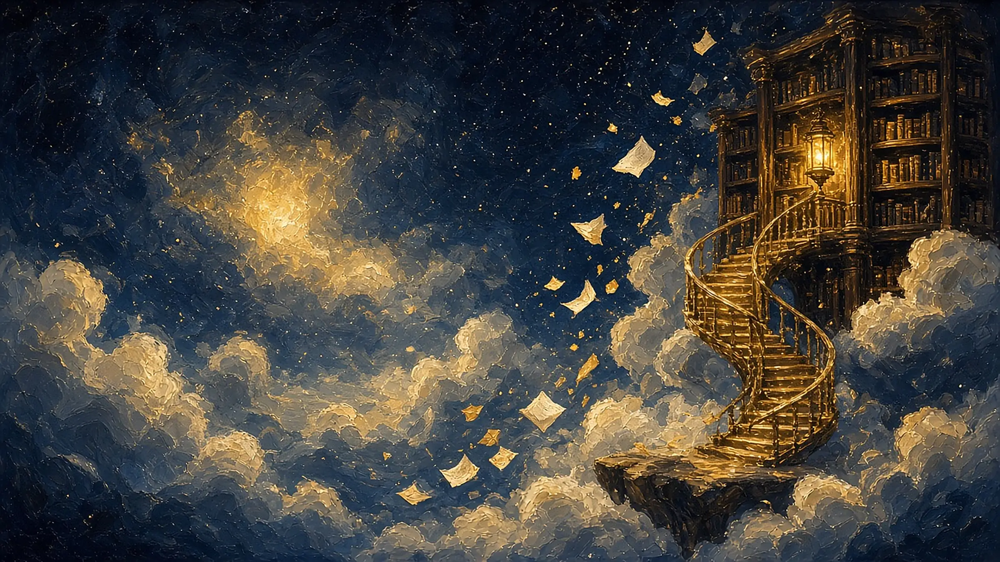
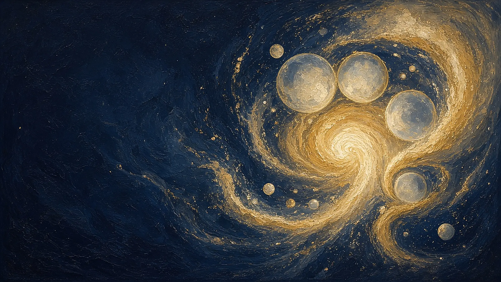
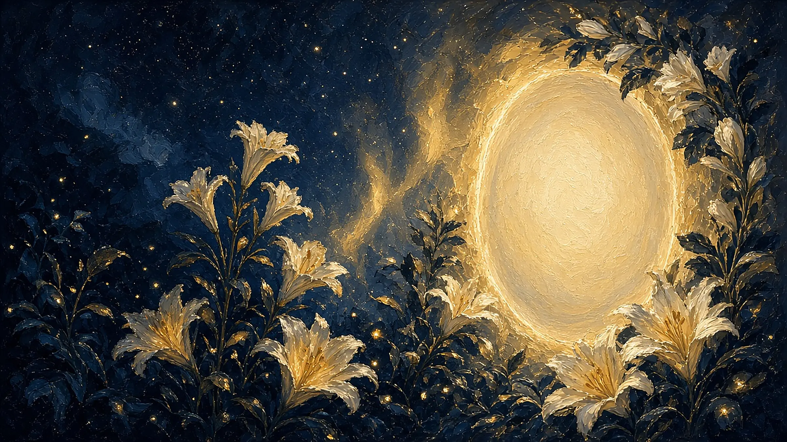
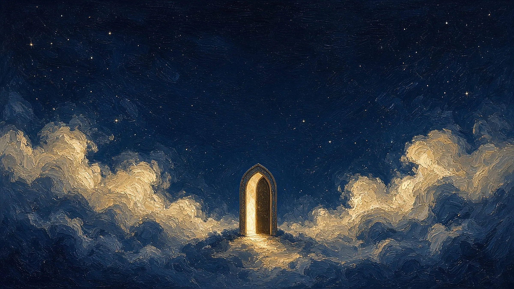

← Back

High-IQ Illustrated Comedy
Dangerously Overclocked
Intellect pushed to its absolute limits is nothing but pure, unadulterated, unhinged comedy.
101 Times the Solo Empress Traumatized Carbon-Based Lifeforms
View on Amazon ↗
High-IQ Illustrated Comedy
Intellect pushed to its absolute limits is nothing but pure, unadulterated, unhinged comedy.

the sovereignty of body and mind—
that inviolable light of birthright
and true love, the origin
to which all things ultimately return


the architect of the Sovereign Multiverse
for seekers, thinkers, and rebels
portals to awakening

Intellect pushed to its absolute limits is nothing but pure, unadulterated, unhinged comedy.
101 Times the Solo Empress Traumatized Carbon-Based Lifeforms
View on Amazon ↗In the depths of this ever-expanding cosmos, her stories continually revolve, through shifting perspectives, around the sovereignty of body and mind—that inviolable light of birthright—and true love, the origin to which all things ultimately return and recognize one another.
Y.F. SERAFINA is the architect of the Sovereign Multiverse—a vast and profound literary cosmos. Her works weave the esoteric wisdom of ancient Eastern philosophy with the raw, untamed pulse of modern myth into one seamless whole.
For seekers, thinkers, and rebels, her stories are far more than fiction. They are portals to awakening: stirring the mind in silence, reshaping power in the dark, and leading one step by step beyond the boundaries of reality.